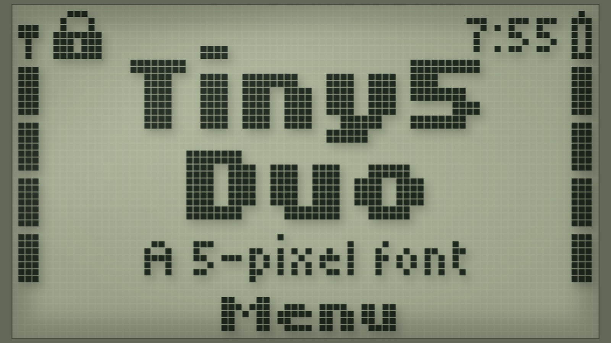
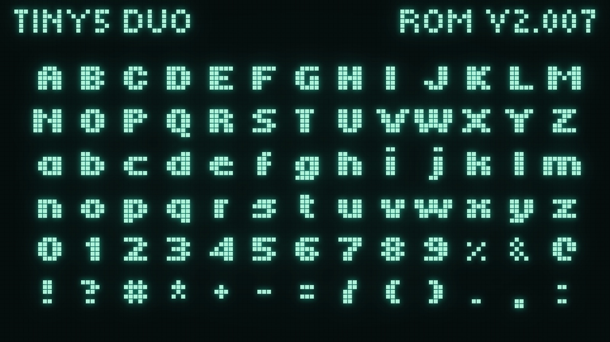
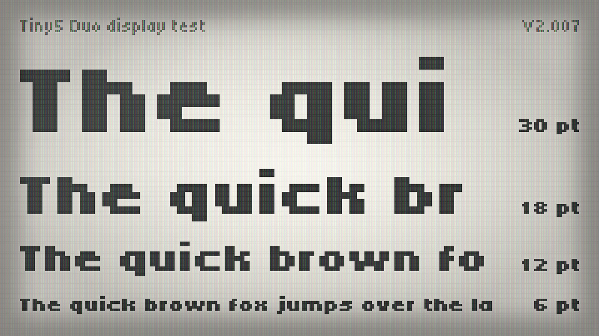
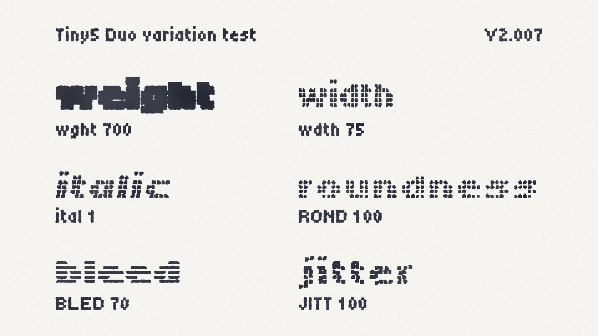
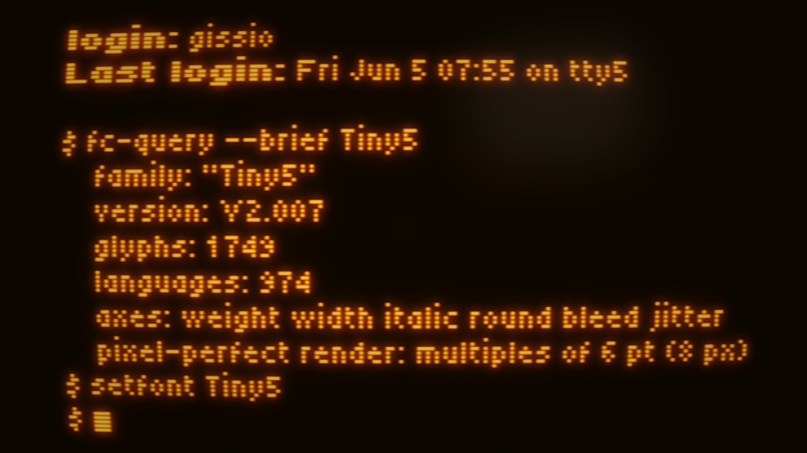
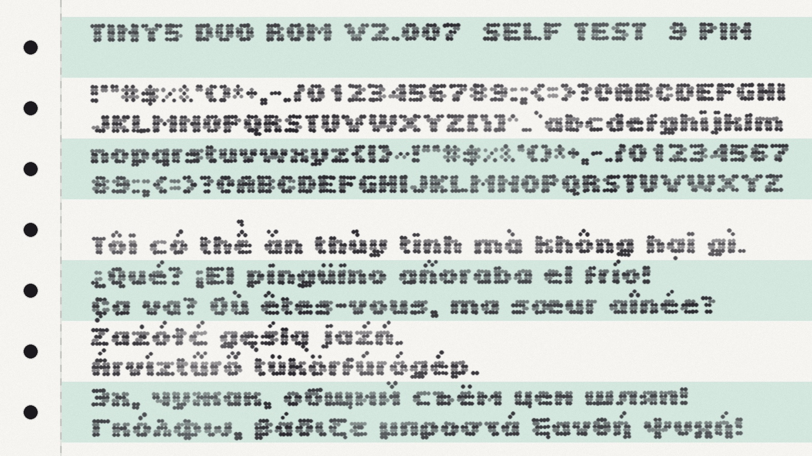

Tiny5 Duo is the bold companion to Tiny5, a compact 5-pixel variable font that captures the essence of 1980s–90s digital minimalism. Where Tiny5 draws every stroke one pixel wide, Tiny5 Duo doubles its vertical stems, giving the same essential letterforms a sturdier, more emphatic presence—ideal for headlines, labels and anywhere a little extra weight helps the text hold its own.
Like Tiny5, it features six variable axes — Weight, Width, Italic, Roundness, Bleed and Jitter — giving you precise control over its look: from crisp geometric shapes and sharp LCD edges to the soft glow of CRT monitors and the subtle ink spread of dot-matrix printers. Set alongside Tiny5, it provides a natural bold counterpart that stays true to the pixel-perfect aesthetic.
Tiny5 Duo excels at evoking retro-futurism, constrained-tech nostalgia, and clean minimalism. It's especially well-suited for:
Tiny5 Duo shares the broad language support of Tiny5, covering Latin, Greek, Cyrillic and Armenian scripts across 974 languages and 1,771 glyphs.
For pixel-perfect results, set the font size to increments of 6 pt (8 px).
To contribute to the project, visit github.com/Gissio/font_Tiny5.






